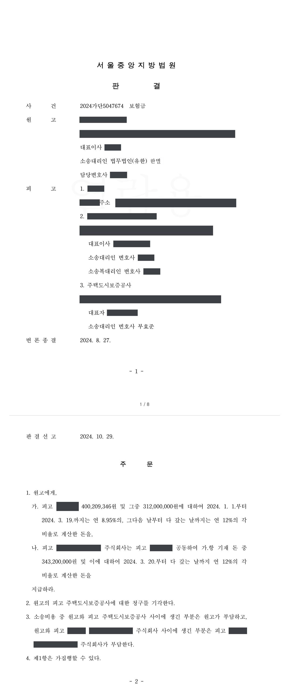

전세자금대출 보증 보험금 청구소송
서울중앙지방법원 2024가단5047674 · 담당변호사 부효준
판결문

사건의 요지
임차인이 사라진 뒤 대출은행이 전세자금대출 보증기관을 상대로 보험금을 청구한 사건으로, 보증사고의 성립과 면책 사유가 다투어진 사건입니다.
사건의 주요 내용
임차인은 2019년 4월 임대인과 다세대주택에 관하여 전세보증금 3억 9천만 원, 기간 2년의 채권적 전세계약을 맺고 확정일자와 전입신고를 마친 뒤, 2019년 5월 대출금융기관인 원고로부터 전세보증금 마련을 위해 3억 1,200만 원의 전세자금대출을 받았습니다. 보증기관인 피고는 같은 날 이 대출채무에 관하여 보증금액 3억 1,200만 원, 보증기간 2021년 6월까지로 정하여 전세금안심대출보증을 하였습니다. 보증약관 제22조 제1호는 전세계약 기간 중 보증기관에 알리지 않고 거주나 주민등록을 옮겨 대항력과 우선변제권을 잃은 경우를 면책사유로 정하고 있었습니다.
그런데 임차인은 대출이자를 연체한 채 주택에서 무단 전출하여 2020년 10월 거주불명자로 등록되었고, 주택에 설정된 근저당권에 따른 임의경매 과정에서 근저당권자가 임차인을 상대로 제기한 임차권부존재확인 소송의 승소판결도 확정되었습니다. 원고는 2020년 3월 보증사고를 통지하고 같은 해 6월 보증채무금 약 3억 1,900만 원의 이행을 청구하였으나, 보증기관은 2023년 6월 직권 거주불명 등록으로 대항력과 우선변제권이 상실되었음을 이유로 면책을 통보하였습니다.
원고는 임차인에게 대출원리금 400,209,346원의 지급을 구하면서, 주위적으로 원고와 부동산권리보험 업무협정을 맺은 보험회사에 보험금 343,200,000원(대출원금의 110%)을, 예비적으로 보증기관에 보증금 3억 1,200만 원과 2020년 6월 이후의 지연손해금을 청구하는 소송을 제기하였습니다. 부효준 변호사는 보증기관을 대리하였습니다.
쟁점
- 임차인이 전세계약 기간 중 보증기관에 알리지 않고 무단 전출하여 거주불명자로 등록된 것이 전세자금대출 보증약관의 면책사유(대항력·우선변제권 상실)에 해당하여 보증기관이 보증금 전액에 대하여 면책되는지
- 보증기관의 면책으로 대출금융기관이 입은 손실이 부동산권리보험 업무협정이 정한 '임차인의 대항력 및 우선변제권 하자로 인한 손실'에 해당하여 보험회사가 보험금을 지급해야 하는지
원고의 주장
- 임차인의 대출이자 연체로 보증사고가 발생하였으므로 보증기관은 보증금액 3억 1,200만 원과 보증채무 이행청구 다음 날인 2020년 6월 20일부터의 지연손해금을 지급하여야 한다고 주장하였습니다(보증기관에 대한 예비적 청구).
- 임차인의 대항력·우선변제권 하자로 손실을 입었으므로 보험회사는 업무협정에 따라 보험가입금액 343,200,000원을 보험금으로 지급하여야 한다고 주장하였습니다(보험회사에 대한 주위적 청구).
부효준 변호사의 주장
- 임차인이 전세계약 기간 중 보증기관에 알리지 않고 주택에서 무단 전출하여 직권으로 거주불명자로 등록되었고, 이로써 전세계약의 대항력과 우선변제권이 상실되었으므로 보증약관 제22조 제1호의 면책사유에 해당하여 보증금 전액에 대하여 보증책임을 면한다고 주장하였습니다.
- 보증기관은 소송 전 2023년 6월의 면책 통보 단계에서부터 같은 사유를 들었고, 소송에서도 거주불명 등록과 임차권부존재확인 판결 확정 등 대항력·우선변제권 상실을 보여 주는 객관적 사정을 바탕으로 면책을 다투었습니다.
법원의 판단
법원은 임차인의 무단 전출로 채권적 전세계약의 대항력과 우선변제권이 상실된 이상 보증기관은 보증금 전액에 대하여 면책되었다고 보아, 원고의 보증기관에 대한 청구를 받아들이지 않았습니다. 원고와 보증기관 사이에 생긴 소송비용은 원고가 부담하게 되었습니다.
임차인에 대하여는 공시송달에 의한 판결(민사소송법 제208조 제3항 제3호)로 대출원리금 400,209,346원과 그중 원금에 대한 약정이율 연 8.95%, 소장부본 송달 다음 날부터는 연 12%의 지연손해금 지급을 명하였습니다. 보험회사에 대하여는 보증기관의 면책으로 원고가 보증금을 받을 수 없게 된 것이 업무협정 제8조 제1항 제5호의 '임대차기간 중 임차인의 대항력 및 우선변제권 하자로 인한 손실'에 해당한다고 보아 보험가입금액 343,200,000원과 지연손해금을 임차인과 공동하여 지급하도록 하였습니다. 원고가 보증사고 통지 사실을 알리지 않아 손해 통지의무를 위반하였다는 보험회사의 주장은, 그러한 사정이 보험약관 제5조 제1항이 정한 통지 대상에 해당하지 않는다는 이유로 받아들이지 않았습니다.
보증약관 제22조(면책사항) 제1호는 ‘전세계약 기간 중 보증회사에 고지하지 않고 거주를 이전하거나 주민등록을 이전하는 등에 의하여 대항력과 우선변제권을 상실하였을 때’를 면책사유로 규정하고 있다.
서울중앙지방법원 2024가단5047674 판결 이유 '1. 나. 피고 보증기관의 전세금안심대출보증 2)'
위 인정사실에 의하면, 임차인의 무단전출로 이 사건 채권적 전세계약의 대항력과 우선변제권이 상실된 이상 피고 보증기관은 보증금 전액에 대하여 면책되었다고 할 것이므로, 원고의 피고 보증기관에 대한 청구는 이유 없다.
서울중앙지방법원 2024가단5047674 판결 이유 '2. 나. 피고 보증기관에 대한 청구'
위 인정사실에 의하면, 임차인의 무단전출에 따른 면책사유의 발생으로 피고 보증기관이 이 사건 보증계약에 의한 보증책임을 부담하지 아니하게 되었고, 이로 인하여 원고는 피고 보증기관으로부터 전세자금대출에 관한 보증금을 지급받을 수 없게 되어 대출금 상당의 손실을 입게 되었다. 이는 이 사건 업무협정 제8조 제1항 제5호가 정한 ‘임대차기간 중 임차인의 대항력 및 우선변제권 하자로 인한 손실’이 발생한 경우에 해당하므로, 피고 보험사는 원고에게 보험금으로 보험가입금액(대출원금 310,000,000원의 110%) 343,200,000원 및 이에 대하여 원고가 구하는 바에 따라 이 사건 소장부본의 최종 송달일 다음 날인 2024. 3. 20.부터 다 갚는 날까지 소송촉진 등에 관한 특례법에 정한 연 12%의 비율로 계산한 지연손해금을 지급할 의무가 있다.
서울중앙지방법원 2024가단5047674 판결 이유 '2. 다. 피고 보험사에 대한 청구 1)'
※ 판결 이유 가운데 이 사건의 판단 기준이 된 부분을 그대로 옮긴 것으로, 당사자 이름 등은 가렸습니다.
이 사건이 보여 주는 것
전세자금대출 보증은 임차인이 전세계약 기간 중 보증기관에 알리지 않고 거주나 주민등록을 옮겨 대항력과 우선변제권을 잃으면 보증기관이 면책되는 구조입니다. 이 판결은 임차인이 무단 전출하여 직권으로 거주불명자로 등록된 경우 그 사유만으로 보증금 전액에 대하여 면책이 인정될 수 있음을 보여 줍니다. 보증기관으로서는 주민등록 직권 거주불명 등록, 임차권부존재확인 판결 등 대항력·우선변제권 상실을 뒷받침하는 객관적 자료를 갖추는 것이 중요합니다.
한편 대출금융기관이 보증기관의 면책으로 입은 손실은 별도로 가입한 부동산권리보험으로 보상될 수 있으며, 이 사건에서도 그 손실은 보험회사가 부담하게 되었습니다. 보증기관에 보증사고를 통지한 뒤 면책 통보가 있기까지 시간이 걸렸더라도, 면책 통보를 받은 즉시 보험금을 청구하였다면 보험약관상 통지의무 위반으로 보지 않았다는 점도 참고할 만합니다.
비슷한 처분을 받으셨다면
행정처분은 처분이 있음을 안 날부터 90일 이내에 행정심판이나 취소소송으로 다투어야 하고, 기간이 지나면 돌이킬 수 없는 처분은 집행정지를 서둘러야 합니다. 처분서를 받은 날짜부터 확인해 드립니다.